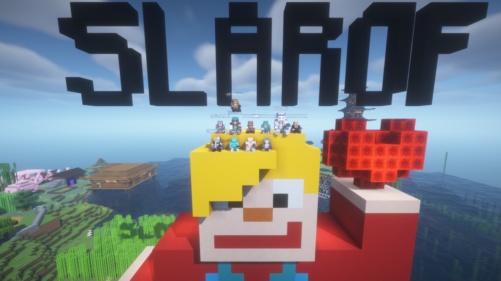
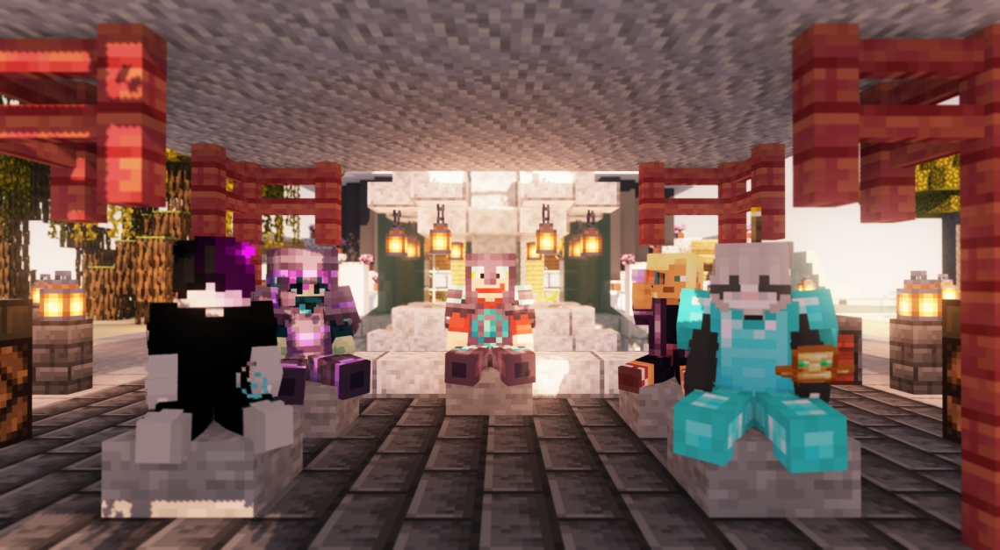
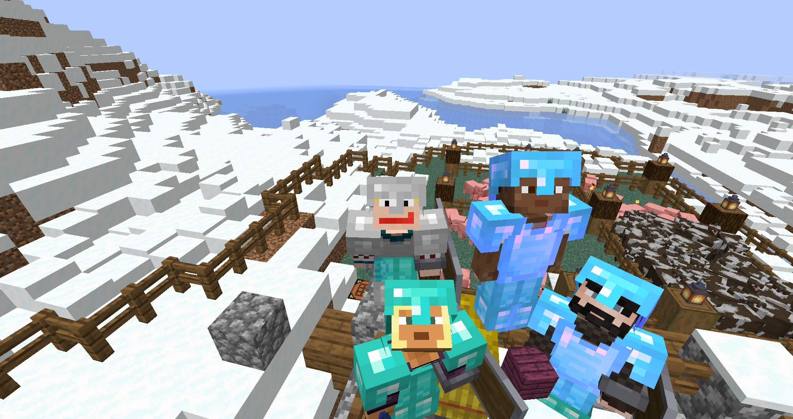
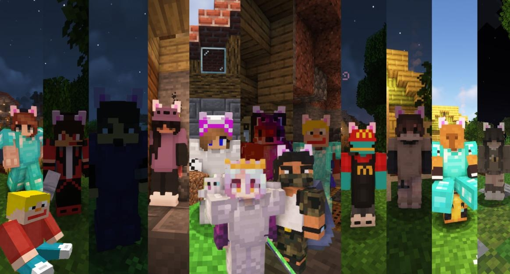
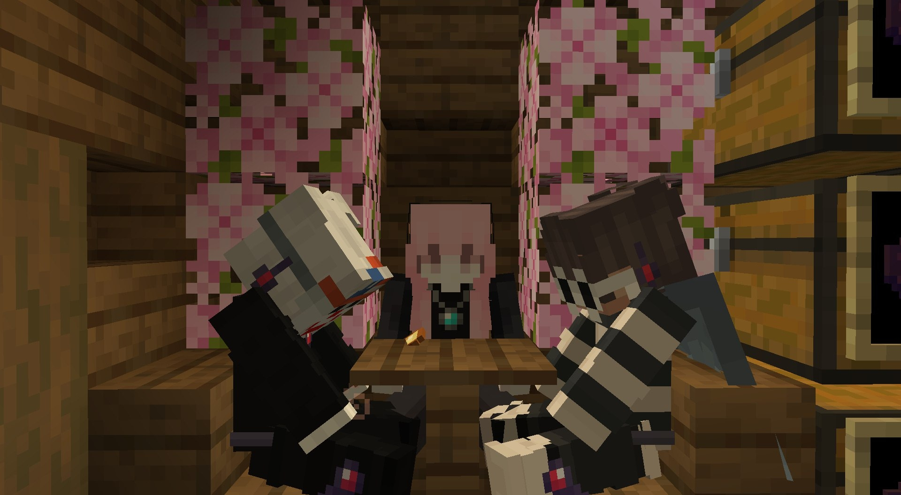

Добро пожаловать
Slarof - сервер Minecraft по выживанию, основанный 13 июня 2022 года.
Надеемся, что Вы сможете найти для себя местечко, новые знакомства и хорошие впечатления!
slarof.ru
Нажмите, чтобы скопировать
Как попасть на сервер?
Чтобы иметь связь с игроками и защитить сервер от гриферов - вход на сервер осуществляется по заявкам
Перейдите на Discord Сервер или Telegram Канал, заполните небольшую анкету, и после одобрения начните своё приключение вместе с нами
Наши цели
- Сделать место, на котором было бы интересно и приятно играть. Предоставить основной контент всем, а не лишь платежеспособным
- Показать комьюнити Minecraft, что некоторые вещи можно реализовать своими руками, не ожидая этого от компании Mojang Studio
- Разрабатывать датапаки, основываясь на обратной связи. В дальнейшем некоторые из них могут стать вкладом в комьюнити Minecraft
Правила сервера
⚠️ Незнание правил не освобождает от ответственности!
Каждый игрок несет полную ответственность за свой аккаунт (в том числе за действия, совершенные с него другими людьми).
Краткая сводка:
- [Гриферство] Запрещено разрушать, портить или изменять постройки и фермы других игроков без их разрешения.
- [Кражи] Запрещено воровать вещи, ресурсы, мобов или любые предметы из сундуков и построек (даже если они выглядят ненужными).
- [PVP] Запрещено убивать игроков или их мобов на их приватной территории.
- [Чит-программы] Запрещено использовать читы, баги, x-ray, fly, kill-aura и любые другие модификации, дающие преимущество.
- [Дискриминация] Запрещено продвигать идеологии, основанные на ненависти (расизм, нацизм, ксенофобия, оправдание войны и т.д.).
- [Токсичность] Запрещено разжигать конфликты, оскорблять, спамить, флудить или хейтить игроков.
- [Реклама] Запрещено рекламировать другие серверы, сайты и услуги без разрешения.
- [Выдача себя за других] Запрещено выдавать себя за других игроков или администрацию.
Готовые модпаки
Установите модпак для комфортной игры. Выберите свой загрузчик:
Наведи курсор на мод, чтобы узнать его назначение:
Fabric (Рекомендуется)
NeoForge
Ресурспаки сервера
Для полного погружения и корректного отображения кастомных предметов на нашем сервере используются собственные ресурспаки.
Галерея
Скриншоты моментов и красивых построек наших игроков. Нажмите на картинку, чтобы увеличить.




